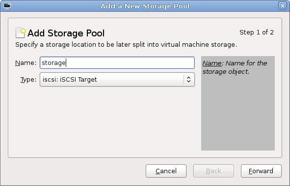
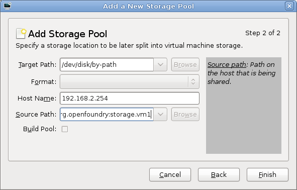
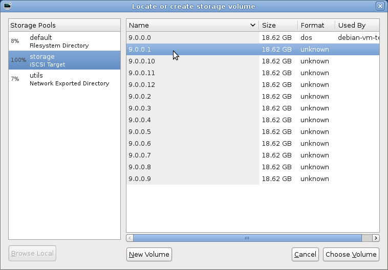
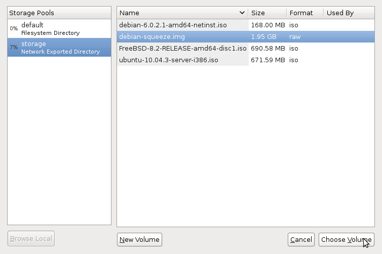

也紀念我們永遠的朋友 李士傑先生（Shih-Chieh Ilya Li）。
基於 KVM 與 libvirt 的虛擬化叢集系統－儲存空間的配置
簡介
上次我們介紹了如何使用 KVM 與 libvirt 架設虛擬化叢集，其儲存方式是採用 NFS。但NFS 並非唯一的網路存取方案，本篇將會介紹另一種 iSCSI 的網路儲存方式。此外，也會針對 QEMU 特有的 qcow2 儲存格式進行介紹，希望協助讀者在實作時能更快上手。
iSCSI
iSCSI 是在 TCP/IP 通訊協定下的 SCSI 實作，這意味著您可以透過區域網路使用 iSCSI 連接其他電腦的硬碟設備，並直接與設備通訊。擔任過網管的朋友或許已經認識到 SCSI 以及 SAS 介面的儲存設備可提供良好的速度與穩定性。
這裡要特別提醒讀者，使用 iSCSI 連接時，建議多架設一組獨立的區域網路來部署，而不建議與原本的網路混雜，以避免降低存取效能。
架設 iSCSI 儲存設備
一般而言，您可以採購一組 SAN (storage area network) 來使用，也有一些作業系統發行版專門針對儲存用途作設計，例如 Openfiler、FreeNAS 等。在此作者將介紹如何使用 Debian 安裝相關套件滿足此需求。
01. 安裝作業系統與套件
請安裝乾淨的 Debian，分割硬碟時需獨立出數塊未分割的磁區，以作為將來虛擬機器使用的硬碟，在此建議用 LVM 來設定，因為比起 MS-DOS 的磁區分割模式，LVM 所允許的分割區數目較多，也更具延展彈性。安裝完 Debian 系統之後請安裝 iSCSI Target（伺服器軟體）。
安裝完作業系統以後，也請記得安裝 iscsitarget 以及 iscsitarget-dkms：
# aptitude install iscsitarget iscsitarget-dkms
設定 iSCSI Target 的 Logical Unit (LUN)
在此我們需要設定 iSCSI 參數，新增一個 Target 以及數個 LUN。
您需要一個 Target 名稱，依照 RFC 3720，Target 的名稱必須使用以下格式：
iqn.[年]-[月].[倒著寫的單位網域名稱]:[自己定義的名稱]
例如 iqn.2011-08.org.openfoundry:storage.vm1
您還需要磁碟分割區的裝置路徑，通常會在 /dev 裡面，如果您使用 LVM，在 /dev/[LVM 名稱] 裡面通常有不同的分割區。
因此請修改 /etc/iet/ietd.conf 並加入以下項目。本內容為 OpenFoudry 之設定，請適當修改為適合自己的環境：
Target iqn.2011-08.org.openfoundry:storage.vm1
Lun 0 Path=/dev/storage_vg/vol1,Type=blockio
Lun 1 Path=/dev/storage_vg/vol2,Type=blockio
我們的規劃中，一個 LUN 就相當於虛擬機器所使用的一個硬碟，在本範例中只有兩個 LUN，但您可以依照個人需求增加 LUN 數目。
設定 iSCSI Target 存取權限
修改 /etc/iet/initators.allow，將原本允許所有連線的 ALL ALL 設定以註解掉的方式使其失效，並參考以下範例輸入（IP 請輸入 VM host 端的位置或是網段）。本內容為 OpenFoudry 之設定，請依照自己的需求修改為適合自己機器的環境：
iqn.2011-08.org.openfoundry:storage.vm1 192.168.1.0/24
或是
iqn.2011-08.org.openfoundry:storage.vm1 192.168.1.1, 192.168.1.2
啟動 iSCSI Target
修改 /etc/default/iscsitarget，並將原本 ISCSITARGET_ENABLE 該行中的 false 改成 true，否則將無法啟動 iSCSI Target。
最後啟動 iSCSI Target：
# /etc/init.d/iscsitarget start
新增 iSCSI Target 位置
跟上一篇新增 NFS storage pool 的步驟大致相同，在新增的選單稍微修改即可。
如圖，請將 Target 改成 iscsi。然後除了輸入 Hostname 以外，在 Source Path 上輸入 Target 名稱，按 Finish 即可。
▲ 圖1：新增 iSCSI Target 圖示 1
▲ 圖2：新增 iSCSI Target 圖示 2
使用 iSCSI 新增虛擬機器
在設定 storage 的地方調整一下步驟，直接選取尚未被使用的 LUN 空間即可。
▲ 圖3：新增 iSCSI 虛擬機器圖示
qcow 格式
qcow 是 QEMU 的 copy-on-write 映像檔格式。由於在使用到虛擬硬碟空間時才會增加大小，於硬碟空間有限的桌上型電腦環境下相當實用，比較新的 qcow2 還可利用一個映像檔為基礎建立新的映像檔。在此將會介紹如何從 VMWare 或是 VirtualBox 的硬碟格式轉換成 qcow2，以及如何建立 qcow2 的快照 (snapshot)。
目前 QEMU 映像檔系列最新的 QED 效率已有提昇，不過由於本篇教學所使用的 Debian Squeeze 裡沒有可以支援 QED 的 QEMU，因此在本文將不介紹。
建立 qcow 映像檔
映像檔剛建立時，只會佔用很小的空間，但經過使用，空間會越佔越多。
建立映像檔主要有兩種方式：
01. 從 virt-manager 建立
如果您是使用本機安裝，或是 NFS 格式的網路存取，virt-manager 在建立映像檔的時候就可以選擇以 qcow2 作為映像檔格式。
02. 使用命令列指令建立
您也可以使用以下指令：
$ qemu-img create -f qcow2 [映像檔名稱] [映像檔大小]
例如：
$ qemu-img create -f qcow2 debian-squeeze-test1.img 16G
來建立映像檔。
從基礎的映像檔建立映像檔
qcow2 可以從基礎的映像檔 (backing file) 建立一個映像檔。藉此，您可以以一個映像檔為基礎建立不同的映像檔，用在不同的虛擬機器上，就不需要再重新安裝作業系統。不過透過基礎的映像檔建立映像檔以後，請不要任意使用基礎的映像檔，以免造成不必要的麻煩。
您可以使用以下指令來建立：
$ qemu-img create -f qcow2 -b [基礎映像檔的名稱] [映像檔名稱]
例如我剛安裝好一套 Ubuntu Server，為了方便我可以透過它來建立一個 snapshot：
$ qemu-img create -f qcow2 -b ubuntu-server-base.img whatever-server-i-want.img
您也可以查詢映像檔用到的是哪一個 backing file：
$ qemu-img info [映像檔名稱]
在映像檔內進行快照
透過 qcow 格式，您可以在映像檔內進行快照 (snapshot)，這有助於系統管理。建立快照後，若您的虛擬機器出現問題，可以再從快照還原之前的狀態。
指令如下：
$ qemu-img snapshot -c [快照名稱] [映像檔名稱] # 建立快照
$ qemu-img snapshot -a [快照名稱] [映像檔名稱] # 套用快照
$ qemu-img snapshot -d [快照名稱] [映像檔名稱] # 刪除快照
$ qemu-img snapshot -l [映像檔名稱] # 列出所有快照
轉換映像檔
如果您想將身邊其他格式的映像檔轉換成 qcow2 格式，可以使用以下指令轉換：
$ qemu-img convert -f [來源格式] -O qcow2 [原本的映像檔名稱] [轉換後的映像檔名稱]
支援的格式相當多，包含 VMWare 的 vmdk、VirtualBox 的 vdi 等。
例如：
$ qemu-img convert -f vmdk -O qcow2 windows-8-preview.vmdk windows-8-preview.img
使用該映像檔建立新的虛擬機器
若要使用剛建立好的映像檔，可以將映像檔放置在 storage pool 指定的目錄中（如果是單機使用，預設是 /var/lib/libvirt/images，必須使用 root 或是 sudo 權限才能放置），並在建立虛擬機器時直接從 storage pool 選取該映像檔即可。
▲ 圖4：使用映像檔建立新的虛擬機器
結語
筆者介紹了如何使用 iSCSI 作為 libvirt 的儲存池，也介紹 qcow 磁碟儲存格式。雖然兩者在 libvirt 裡面無法同時使用，但是讀者可以依對效能的需求或是便利性自行決定要使用哪一種格式，以達到最佳的生產力。
作者簡介
魏藥，本名魏銘廷，目前是大學四年級學生。目前在自由軟體鑄造場擔任技術支援工讀生，也是一隻阿宅。最近在 Debian、Ubuntu 與 LXDE 等社群活動，做各式各樣的事情。
You may be interested in the following articles:
- 基於 KVM 與 libvirt 的虛擬化叢集系統－Debian 篇 - 2011-09-16
OSSF Newsletter : 第 186 期 程式語言延伸模組管理系統
Tags: linux, kvm, libvirt, cluster, virtualization,
Category: Tech Column
Special


Address：No.128, Sec.2, Academia Rd., Institute of Information Science, Academia Sinica, Nangang District, Taipei City 11529, Taiwan (R.O.C).
Privacy Policy. Terms-of-use